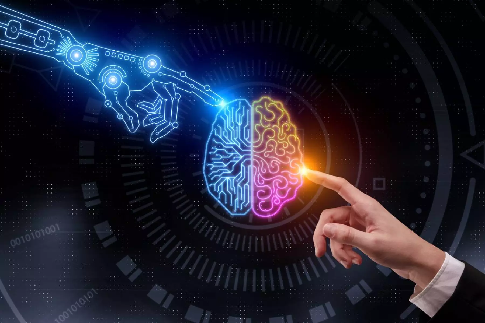

La historia de la inteligencia artificial comenzó en 1943 con la publicación del artículo «A
Logical Calculus of Ideas Immanent in Nervous Activity» de Warren McCullough y Walter Pitts. En
ese trabajo, los científicos presentaron el primer modelo matemático para la creación de una red
neuronal.
El primer ordenador de red neuronal, Snarc, fue creado en 1950 por dos alumnos de Harvard:
Marvin Minsky y Dean Edmonds. Ese mismo año, Alan Turing publicó el Test de Turing, que todavía
se utiliza hoy para valorar las IA.
En 1952, Arthur Samuel creó un software capaz de aprender a jugar al ajedrez de forma autónoma.
El término inteligencia artificial fue utilizado por primera vez en la conferencia «Dartmouth
Summer Research Project on Artificial Intelligence» de John McCarthy en 1956.
En ese acto, los investigadores presentaron los objetivos y la visión de la IA. Muchos consideran
esta conferencia como el verdadero nacimiento de la inteligencia artificial, tal y como se
conoce hoy en día.
En 1959, Arthur Samuel acuñó el término Machine Learning mientras trabajaba en IBM. Por su
parte, John McCarthy y Marvin Minsky fundaron el MIT Artificial Intelligence Project. En 1963,
John McCarthy también creó el «AI Lab» en la Universidad de Stanford.
En los siguientes años, se cernieron dudas sobre el campo de la IA. En 1966, el informe
estadounidense ALPAC puso de manifiesto la falta de avances en la investigación de la traducción
automática destinada a traducir simultáneamente la lengua rusa en el contexto de la Guerra Fría.
Muchos proyectos financiados por el gobierno estadounidense fueron cancelados.
Diez años después, en 1997, la historia de la IA estuvo marcada por un acontecimiento importante.
La IA Deep Blue de IBM triunfó sobre el campeón mundial de ajedrez Gary Kasparov. Por primera
vez, el hombre fue derrotado por la máquina.
Diez años después, los avances tecnológicos permitieron el resurgimiento de la inteligencia
artificial. En 2008, Google hizo grandes avances en el reconocimiento de voz y lanzó esa función
en sus aplicaciones para smartphones.

La inteligencia artificial no busca reemplazar, sino
mejorar y colaborar con la mente humana.

La inteligencia artificial es tan diversa como la
imaginación humana que la impulsa.

La inteligencia artificial nos desafía a repensar lo que
es posible y a explorar nuevos horizontes en la tecnología y la
cognición.